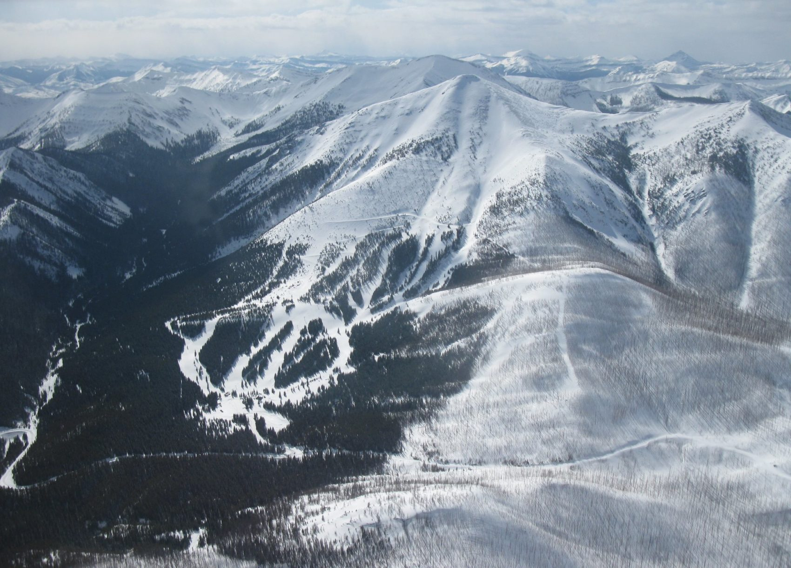

About Teton
Teton Pass Ski Area is an alpine ski area located along the Rocky Mountain Front in northwestern Montana, west of Choteau, Montana and east of the Continental Divide. Formerly known as Rocky Mountain Hi in the 1990s, it was bought by New Zealand native Nick Wood in July 2010. For the 2011–12 season, the resort was unable to obtain insurance and thus did not open its facilities. The resort closed again in 2017 and remained so until 2019 when it was purchased by its former manager and Choteau resident, Charles Hlavac. Initially listed for $3,000,000, it eventually sold for just $345,000.
Why Teton?
Teton Pass Ski Area is one of the most beautiful ski resorts in Montana. When you get to the top of the lift, every single direction you look, has the best view of any resort in Montana. Located 30 miles deep in the Rocky Mountain Front, Teton constantly gets dumped on throughout the winter, which provides great skiing throughout the season. The lift at Teton doesn't even go half way up the mountain it sits on. This allows those who enjoy to backcountry ski, to hike up and get super fresh powder.